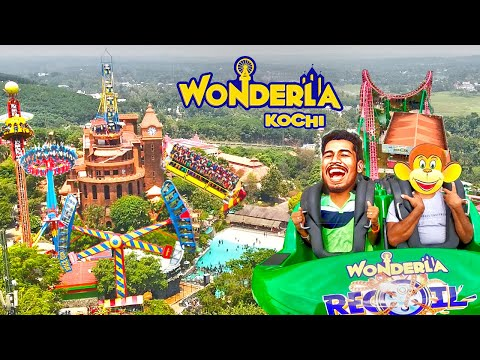
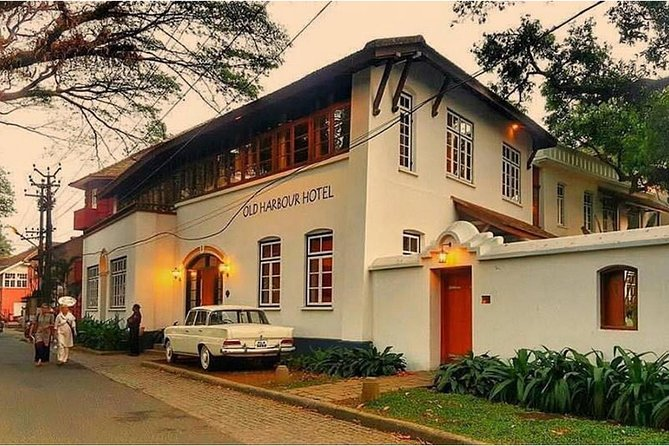

<html>
    <head>
        <style>
            .myDiv{
                position: relative;
                border: 5px outset blue;
                height: 400;
                text-align: center;
                background-size:100%;
                background-image: url("ernakulam.jpg");
               
            }

            .container{
                display:flex;
                flex-wrap: nowrap;
                background-color: red(49, 167, 65);
                text-align: center;
            }

            .container > div{
                
                background-color:red(49, 167, 65);
                width: 1250px;
                height: 45px;
                margin: 3px;
                text-align: center;
            }

            .container2{
                display:flex;
                flex-wrap: nowrap;
                background-color:black;
                padding-bottom: 30%;
                text-align: center;
            }
            .container2 > div{
                position: relative;
                background-color:white;
                width: 1250px;
                height: 175px;
                margin: 3px;
                text-align: left;
            }

        </style>
        </html>
        <body>
            <div class = "myDiv">

                <h1 style="font-size: 120; font-family:sans-serif;">ERNAKULAM</h1>

<h3 style="color: yellow;"><b><p>Ernakulam  is the central business district of the city of Kochi, Kerala, India. It is the namesake of Ernakulam district. Many major establishments, including the Kerala High Court, the office of the Kochi Municipal Corporation and the Cochin Shipyard are situated here.</p><b></h3>
                <h3 style="color: azure;">.</h3>
            </div>
            <div class="container">
            <div><h2 style="color: blue;">ADVENTURE</h2></div>
            <div><h2 style="color: blue;">TO VISIT</h2></div>
            </div>

            <div class="container2">
                <div>
                    
                    
                    <h3 style="color: aqua;">WONDERLA</h3>
                    <P style="color: white;">The happiest place in God's Own Country!
Left or right, wherever you look, you can hear giggles, screams of joy and shouts of excitement! Wonderla Kochi is 30 acres of pure, fun-filled joyrides and adventure.

With 50+ exhilarating rides that will leave you wanting for more, this is, without a doubt, the happiest place in Kerala!<br>A day well spent!
Are you a slow starter or do you head straight in for the hardest, coolest and most thrilling of rides? Choose your dose of fun and get started, for an unforgettable day lies ahead! That's right, the sky is the limit at Wonderla Kochi and the amusement is ceaseless!</P></br>
    
                </div>
                <div>
                    
                    
                    <h3 style="color: aqua;"> FORT KOCHI </h3>
                    <P style="color: white;">Fort Kochi takes its name from the Fort Manuel of Cochin,[1] the first European fort on Indian soil, controlled by the Portuguese East Indies.[2] This is part of a handful of water-bound islands and islets toward the south-west of the mainland Kochi, and collectively known as Old Cochin or West Cochin. Adjacent to this is the locality of Mattancherry. In 1967, these three municipalities along with a few adjoining areas, were amalgamated to form the Kochi Municipal Corporation.

Fort Kochi is rich in heritage and culture, and is a prominent tourist destination for both domestic and international travellers- being ranked as ninth among the top 25 in National Geographic’s Top Tourist Destinations To Explore In 2020.[3]</P>
                </div>
            </div>
        </body>
        </html>